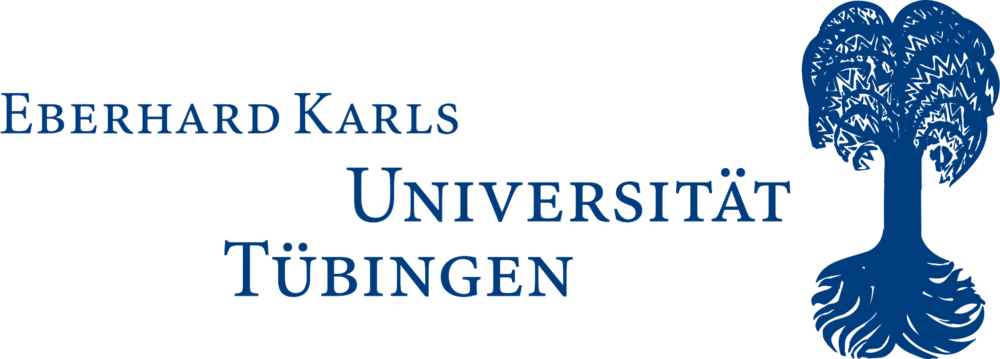
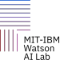

through Single-Modality Teachers




University of Tübingen
Co-advised by Dr. Jim Glass
MIT CSAIL
Audio-Visual Learning
CAV-MAE Syncfirst author · CVPR 2025
Omni-R1co-author · ASRU 2025
AVRTfirst author · under submission
Video Understanding
TTA-Vidco-first author · under submission
Decompose, Compare, and Decidecollaborator · under submission
Spatial Audio-Video understanding
Teaching omni-modal models to answer spatial questions about egocentric video and 3D audio.
 Workshop5th Edition
Workshop5th EditionWhat is Next in
Multimodal Foundation Models?
Keynote Speakers

Yeung-Levy

Sitzmann

Darrell

Averbuch-Elor

Bai
Program
Welcome & Opening
Introduction & overview
Poster Session & Coffee
Posters & networking · coffee 3:00–4:00 PM
Panel Discussion
What is Next in Multimodal Foundation Models?
Concluding Remarks
Closing & wrap-up

full schedule

Combines evidence
Connects visual context with audio events, not each modality alone.
Grounds sound in scene
Links bass resonance to open terrain and long-distance propagation.
Disambiguates with context
The "Jenny!" cue is meaningful only with the crowded visual scene.
Explains causal events
An off-screen firework explains why the woman startles and spills her wine.
Transfers to hard cases
Generalizes from AVQA video to OmniBench image/audio reasoning.